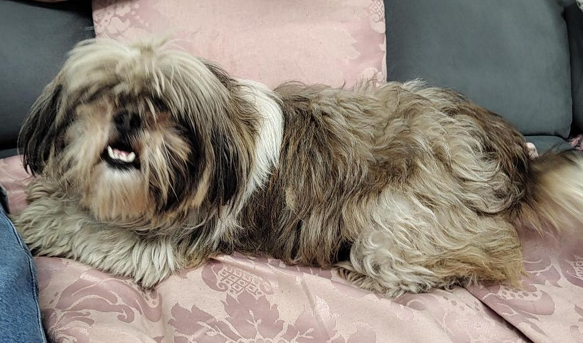

Cachorra encontrada

você me conhece?
Ajude essa menina
a voltar pra casa.
a voltar pra casa.
Shih tzu, fêmea, não castrada.
Estava na São José, perto do Mercado Marcolan.
Estava na São José, perto do Mercado Marcolan.
É sua ou sabe de quem é? Chame no direct
@souazoe.pf